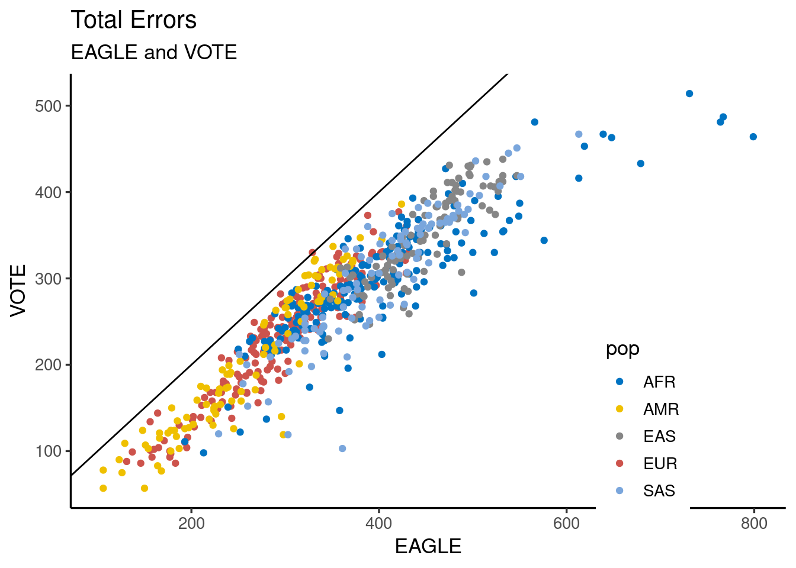
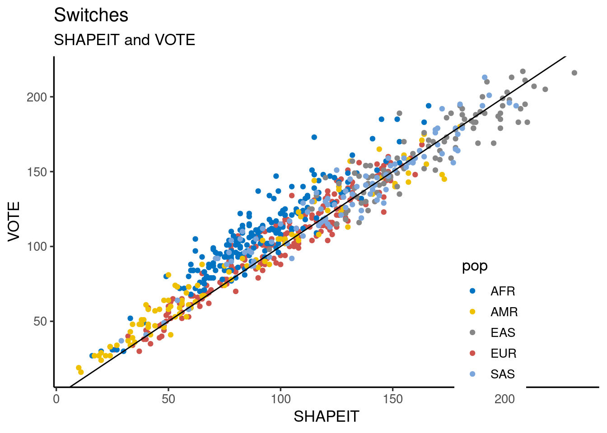
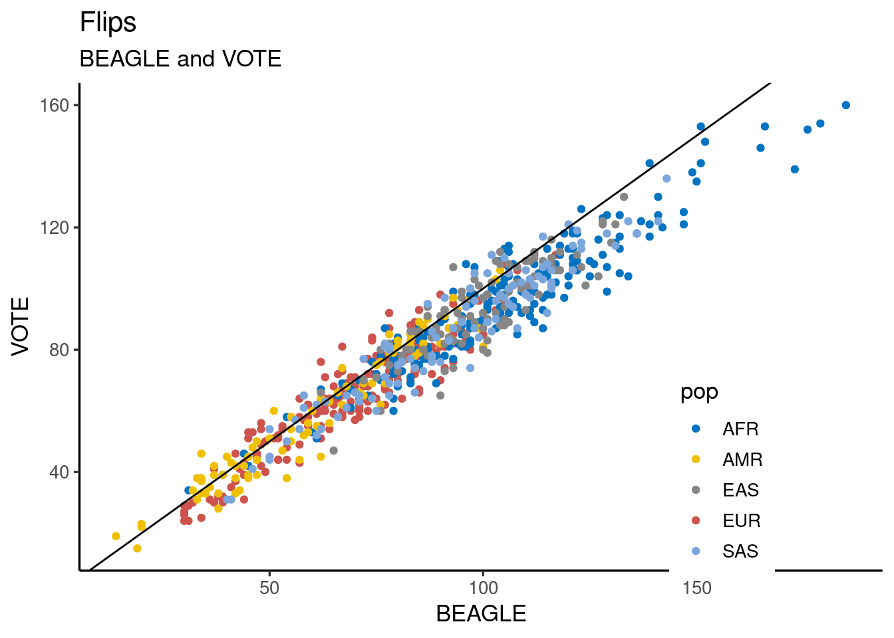

09012023_consensus_idea
Andy Beck
2023-01-09
Last updated: 2023-06-06
Checks: 6 1
Knit directory: phasing/
This reproducible R Markdown analysis was created with workflowr (version 1.7.0). The Checks tab describes the reproducibility checks that were applied when the results were created. The Past versions tab lists the development history.
Great! Since the R Markdown file has been committed to the Git repository, you know the exact version of the code that produced these results.
Great job! The global environment was empty. Objects defined in the global environment can affect the analysis in your R Markdown file in unknown ways. For reproduciblity it’s best to always run the code in an empty environment.
The command set.seed(20220221) was run prior to running
the code in the R Markdown file. Setting a seed ensures that any results
that rely on randomness, e.g. subsampling or permutations, are
reproducible.
Great job! Recording the operating system, R version, and package versions is critical for reproducibility.
Nice! There were no cached chunks for this analysis, so you can be confident that you successfully produced the results during this run.
Using absolute paths to the files within your workflowr project makes it difficult for you and others to run your code on a different machine. Change the absolute path(s) below to the suggested relative path(s) to make your code more reproducible.
| absolute | relative |
|---|---|
| /net/snowwhite/home/beckandy/research/phasing/data/sample_pairs_18apr2023.csv | data/sample_pairs_18apr2023.csv |
| /net/snowwhite/home/beckandy/research/phasing/output/final_switch_errors/whatshap/ | output/final_switch_errors/whatshap |
| /net/snowwhite/home/beckandy/research/phasing/output/final_switch_errors/vote/ | output/final_switch_errors/vote |
| /net/snowwhite/home/beckandy/research/phasing/output/final_switch_errors/vote/easy/ | output/final_switch_errors/vote/easy |
| /net/snowwhite/home/beckandy/research/phasing/data/consensus/whatshap_counts.csv | data/consensus/whatshap_counts.csv |
Great! You are using Git for version control. Tracking code development and connecting the code version to the results is critical for reproducibility.
The results in this page were generated with repository version c6008a6. See the Past versions tab to see a history of the changes made to the R Markdown and HTML files.
Note that you need to be careful to ensure that all relevant files for
the analysis have been committed to Git prior to generating the results
(you can use wflow_publish or
wflow_git_commit). workflowr only checks the R Markdown
file, but you know if there are other scripts or data files that it
depends on. Below is the status of the Git repository when the results
were generated:
Ignored files:
Ignored: .Rhistory
Ignored: .Rproj.user/
Ignored: data/1kgp/
Ignored: data/consensus/
Ignored: data/gnomAD/
Ignored: data/mask/
Ignored: data/ovary/
Ignored: data/ref/
Ignored: data/shapeit/
Ignored: output/2023_switch_errors/
Ignored: output/X_hets/
Ignored: output/admix_switch_errors/
Ignored: output/afr_eur_ref/
Ignored: output/background_rates/
Ignored: output/figures/
Ignored: output/filter_switch_errors/
Ignored: output/final_switch_errors/
Ignored: output/gnomad/
Ignored: output/male_only_reference/
Ignored: output/nygc/
Ignored: output/singleton_switch_errors/
Ignored: plink.log
Ignored: sandbox/
Untracked files:
Untracked: analysis/20230221_gnomAD.Rmd
Untracked: analysis/NYGC_phasing_results_exploration.Rmd
Untracked: code/batch_diploid_v3.sh
Untracked: code/batch_diploid_v3_afr.sh
Untracked: code/batch_diploid_v3_male.sh
Untracked: code/batch_diploid_v3_singletons.sh
Untracked: code/batch_diploid_v3_topmed.sh
Untracked: code/core
Untracked: code/old/
Unstaged changes:
Modified: README.md
Modified: Rplots.pdf
Modified: analysis/07032023_gnomad_nygc_comp.Rmd
Modified: analysis/15022023_nygc_vs_internal.Rmd
Modified: analysis/captains_log.Rmd
Modified: code/batch_annotate_het.sh
Modified: code/batch_annotate_switch.sh
Deleted: code/batch_diploid_admix.sh
Deleted: code/batch_diploid_analysis.sh
Deleted: code/batch_diploid_v2.sh
Deleted: code/batch_diploid_v2_1kgp.sh
Deleted: code/batch_diploid_v2_filter.sh
Deleted: code/batch_parameter_test.sh
Modified: code/batch_vote_phase.sh
Modified: code/common_functions.R
Modified: code/sample_X_pairs.R
Modified: code/topmed_comparison_prep.sh
Modified: code/vote_phase.R
Modified: code/vote_phase_easy.R
Note that any generated files, e.g. HTML, png, CSS, etc., are not included in this status report because it is ok for generated content to have uncommitted changes.
These are the previous versions of the repository in which changes were
made to the R Markdown
(analysis/09012023_consensus_idea.Rmd) and HTML
(docs/09012023_consensus_idea.html) files. If you’ve
configured a remote Git repository (see ?wflow_git_remote),
click on the hyperlinks in the table below to view the files as they
were in that past version.
| File | Version | Author | Date | Message |
|---|---|---|---|---|
| Rmd | c6008a6 | Andy Beck | 2023-06-06 | wflow_publish("analysis/09012023_consensus_idea.Rmd") |
| html | d225c8e | Andy Beck | 2023-06-06 | Build site. |
| Rmd | 120e783 | Andy Beck | 2023-06-06 | wflow_publish("analysis/09012023_consensus_idea.Rmd") |
| Rmd | e239a47 | Andy Beck | 2023-02-15 | initial commit |
Introduction
The idea here is to take the phased VCFs from EAGLE, BEAGLE, and SHAPEIT and somehow combine them in order to come up with a single pair of haploids.
library(tidyverse)── Attaching core tidyverse packages ──────────────────────── tidyverse 2.0.0 ──
✔ dplyr 1.1.2 ✔ readr 2.1.4
✔ forcats 1.0.0 ✔ stringr 1.5.0
✔ ggplot2 3.4.2 ✔ tibble 3.2.1
✔ lubridate 1.9.2 ✔ tidyr 1.3.0
✔ purrr 1.0.1
── Conflicts ────────────────────────────────────────── tidyverse_conflicts() ──
✖ dplyr::filter() masks stats::filter()
✖ dplyr::lag() masks stats::lag()
ℹ Use the conflicted package (<http://conflicted.r-lib.org/>) to force all conflicts to become errorsid_df <- read_csv("/net/snowwhite/home/beckandy/research/phasing/data/sample_pairs_18apr2023.csv",
col_names = c("POP", "ID1", "ID2"))Rows: 400 Columns: 3
── Column specification ────────────────────────────────────────────────────────
Delimiter: ","
chr (3): POP, ID1, ID2
ℹ Use `spec()` to retrieve the full column specification for this data.
ℹ Specify the column types or set `show_col_types = FALSE` to quiet this message.cbPalette <- c("#999999", "#E69F00", "#56B4E9", "#009E73", "#F0E442", "#0072B2", "#D55E00", "#CC79A7")
library(ggsci)whats_dir <- "/net/snowwhite/home/beckandy/research/phasing/output/final_switch_errors/whatshap/"
# df_wh_eagle <- read_tsv(paste0(whats_dir, "eagle/eval_1.tsv"))
# df_wh_beagle <- read_tsv(paste0(whats_dir, "beagle/eval_1.tsv"))
# df_wh_shapeit <- read_tsv(paste0(whats_dir, "shapeit/eval_1.tsv"))
#
# df_wh_eagle$all_switches
# df_wh_beagle$all_switches
# df_wh_shapeit$all_switches
#
# df_wh_eagle$all_switchflips
# df_wh_beagle$all_switchflips
# df_wh_shapeit$all_switchflipsResult Analysis
Having run the voting process on all 400 pseudo-diploids, let’s load in the results for all samples.
get_vote_res <- function(ids = 400,
res_dir = "/net/snowwhite/home/beckandy/research/phasing/output/final_switch_errors/vote/",
prefix = "error_vote_",
suffix = ".tsv"){
df <- read_tsv(paste0(res_dir, prefix, 1, suffix), show_col_types = FALSE) %>%
select(starts_with("all"))
for(i in 2:ids){
df <- bind_rows(df,
{read_tsv(paste0(res_dir, prefix, i, suffix), show_col_types = FALSE) %>%
select(starts_with("all"))})
}
df$id <- 1:ids
return(df)
}
# df <- get_vote_res()
# df_easy <- get_vote_res(res_dir = "/net/snowwhite/home/beckandy/research/phasing/output/final_switch_errors/vote/easy/")
# df$id <- 1:400
# df_easy$id <- 1:400
# df$alg <- "vote"
# df_easy$alg <-"simple_vote"Let’s also gather these results for the 3 phasing algorithms:
get_alg_res <- function(alg,
data_dir = "/net/snowwhite/home/beckandy/research/phasing/output/final_switch_errors/whatshap/",
ids = 400){
base_dir <- paste0(data_dir, alg, "/")
df <- read_tsv(paste0(base_dir, "eval_", 1,".tsv"), show_col_types = FALSE) %>%
select(starts_with("all"))
for(i in 2:ids){
df <- bind_rows(df, {
read_tsv(paste0(base_dir, "eval_", i,".tsv"), show_col_types = FALSE) %>%
select(starts_with("all"))
})
}
return(df)
}
# df_beagle <- get_alg_res("beagle")
# df_eagle <- get_alg_res("eagle")
# df_shapeit <- get_alg_res("shapeit")
#
# df_beagle$id <- 1:400
# df_eagle$id <- 1:400
# df_shapeit$id <- 1:400
#
# df_beagle$alg <- "beagle"
# df_eagle$alg <- "eagle"
# df_shapeit$alg <- "shapeit"
#
# # smash everything together
# df <- bind_rows(df, df_beagle) %>%
# bind_rows(df_eagle) %>%
# bind_rows(df_shapeit) %>%
# bind_rows(df_easy)
# save for later usage
#write_csv(df, "/net/snowwhite/home/beckandy/research/phasing/data/consensus/whatshap_counts.csv")df <- read_csv("/net/snowwhite/home/beckandy/research/phasing/data/consensus/whatshap_counts.csv")Rows: 2000 Columns: 7
── Column specification ────────────────────────────────────────────────────────
Delimiter: ","
chr (2): all_switchflips, alg
dbl (5): all_assessed_pairs, all_switches, all_switch_rate, all_switchflip_r...
ℹ Use `spec()` to retrieve the full column specification for this data.
ℹ Specify the column types or set `show_col_types = FALSE` to quiet this message.df$pop <- c(rep(rep(c("EUR", "AFR"), each = 200), times = 5))Plots by algorithm
df %>%
select(id, pop, alg, all_switches) %>%
pivot_wider(id_cols = c(id, pop), names_from = alg, values_from = all_switches) %>%
ggplot(aes(x = simple_vote, y = vote, colour = pop)) +
geom_point() +
xlab("EASY") +
ylab("VOTE") +
geom_abline(slope = 1, intercept = 0) +
ggtitle("Total Errors", "EASY and VOTE") +
scale_color_jco() +
theme_classic(base_size = 13) +
theme(legend.position = c(0.8, .2))
| Version | Author | Date |
|---|---|---|
| d225c8e | Andy Beck | 2023-06-06 |
df %>%
select(id, pop, alg, all_switches) %>%
pivot_wider(id_cols = c(id, pop), names_from = alg, values_from = all_switches) %>%
ggplot(aes(x = beagle, y = vote, colour = pop)) +
geom_point() +
xlab("BEAGLE") +
ylab("VOTE") +
geom_abline(slope = 1, intercept = 0) +
ggtitle("Total Errors", "BEAGLE and VOTE") +
scale_color_jco() +
theme_classic(base_size = 13) +
theme(legend.position = c(0.8, .2))
| Version | Author | Date |
|---|---|---|
| d225c8e | Andy Beck | 2023-06-06 |
df %>%
select(id, pop, alg, all_switches) %>%
pivot_wider(id_cols = c(id, pop), names_from = alg, values_from = all_switches) %>%
ggplot(aes(x = eagle, y = vote, colour = pop)) +
geom_point() +
xlab("EAGLE") +
ylab("VOTE") +
geom_abline(slope = 1, intercept = 0) +
ggtitle("Total Errors", "EAGLE and VOTE") +
scale_color_jco() +
theme_classic(base_size = 13) +
theme(legend.position = c(0.8, .2))
| Version | Author | Date |
|---|---|---|
| d225c8e | Andy Beck | 2023-06-06 |
df %>%
select(id, pop, alg, all_switches) %>%
pivot_wider(id_cols = c(id, pop), names_from = alg, values_from = all_switches) %>%
ggplot(aes(x = shapeit, y = vote, colour = pop)) +
geom_point() +
xlab("SHAPEIT") +
ylab("VOTE") +
geom_abline(slope = 1, intercept = 0) +
ggtitle("Total Errors", "SHAPEIT and VOTE") +
scale_color_jco() +
theme_classic(base_size = 13) +
theme(legend.position = c(0.8, .2))
| Version | Author | Date |
|---|---|---|
| d225c8e | Andy Beck | 2023-06-06 |
Separate flips from switches:
df <- df %>%
separate(all_switchflips, into = c("switches", "flips"), sep = "/", remove = FALSE) %>%
mutate(switches = as.numeric(switches),
flips = as.numeric(flips))Just switches:
df %>%
select(id, pop, alg, switches) %>%
pivot_wider(id_cols = c(id, pop), names_from = alg, values_from = switches) %>%
ggplot(aes(x = beagle, y = vote, colour = pop)) +
geom_point() +
xlab("BEAGLE") +
ylab("VOTE") +
geom_abline(slope = 1, intercept = 0) +
ggtitle("Switches", "BEAGLE and VOTE") +
scale_color_jco() +
theme_classic(base_size = 13) +
theme(legend.position = c(0.8, .2))
| Version | Author | Date |
|---|---|---|
| d225c8e | Andy Beck | 2023-06-06 |
df %>%
select(id, pop, alg, switches) %>%
pivot_wider(id_cols = c(id, pop), names_from = alg, values_from = switches) %>%
ggplot(aes(x = eagle, y = vote, colour = pop)) +
geom_point() +
xlab("EAGLE") +
ylab("VOTE") +
geom_abline(slope = 1, intercept = 0) +
ggtitle("Switches", "EAGLE and VOTE") +
scale_color_jco() +
theme_classic(base_size = 13) +
theme(legend.position = c(0.8, .2))
| Version | Author | Date |
|---|---|---|
| d225c8e | Andy Beck | 2023-06-06 |
df %>%
select(id, pop, alg, switches) %>%
pivot_wider(id_cols = c(id, pop), names_from = alg, values_from = switches) %>%
ggplot(aes(x = shapeit, y = vote, colour = pop)) +
geom_point() +
xlab("SHAPEIT") +
ylab("VOTE") +
geom_abline(slope = 1, intercept = 0) +
ggtitle("Switches", "SHAPEIT and VOTE") +
scale_color_jco() +
theme_classic(base_size = 13) +
theme(legend.position = c(0.8, .2))
| Version | Author | Date |
|---|---|---|
| d225c8e | Andy Beck | 2023-06-06 |
df %>%
select(id, pop, alg, flips) %>%
pivot_wider(id_cols = c(id, pop), names_from = alg, values_from = flips) %>%
ggplot(aes(x = beagle, y = vote, colour = pop)) +
geom_point() +
xlab("BEAGLE") +
ylab("VOTE") +
geom_abline(slope = 1, intercept = 0) +
ggtitle("Flips", "BEAGLE and VOTE") +
scale_color_jco() +
theme_classic(base_size = 13) +
theme(legend.position = c(0.8, .2))
| Version | Author | Date |
|---|---|---|
| d225c8e | Andy Beck | 2023-06-06 |
df %>%
select(id, pop, alg, flips) %>%
pivot_wider(id_cols = c(id, pop), names_from = alg, values_from = flips) %>%
ggplot(aes(x = eagle, y = vote, colour = pop)) +
geom_point() +
xlab("EAGLE") +
ylab("VOTE") +
geom_abline(slope = 1, intercept = 0) +
ggtitle("Flips", "EAGLE and VOTE") +
scale_color_jco() +
theme_classic(base_size = 13) +
theme(legend.position = c(0.8, .2))
| Version | Author | Date |
|---|---|---|
| d225c8e | Andy Beck | 2023-06-06 |
df %>%
select(id, pop, alg, flips) %>%
pivot_wider(id_cols = c(id, pop), names_from = alg, values_from = flips) %>%
ggplot(aes(x = shapeit, y = vote, colour = pop)) +
geom_point() +
xlab("SHAPEIT") +
ylab("VOTE") +
geom_abline(slope = 1, intercept = 0) +
ggtitle("Flips", "SHAPEIT and VOTE") +
scale_color_jco() +
theme_classic(base_size = 13) +
theme(legend.position = c(0.8, .2))
| Version | Author | Date |
|---|---|---|
| d225c8e | Andy Beck | 2023-06-06 |
sessionInfo()R version 4.3.0 (2023-04-21)
Platform: x86_64-pc-linux-gnu (64-bit)
Running under: Ubuntu 18.04.6 LTS
Matrix products: default
BLAS: /usr/lib/x86_64-linux-gnu/openblas/libblas.so.3
LAPACK: /usr/lib/x86_64-linux-gnu/libopenblasp-r0.2.20.so; LAPACK version 3.7.1
locale:
[1] LC_CTYPE=en_US.UTF-8 LC_NUMERIC=C
[3] LC_TIME=en_US.UTF-8 LC_COLLATE=en_US.UTF-8
[5] LC_MONETARY=en_US.UTF-8 LC_MESSAGES=en_US.UTF-8
[7] LC_PAPER=en_US.UTF-8 LC_NAME=C
[9] LC_ADDRESS=C LC_TELEPHONE=C
[11] LC_MEASUREMENT=en_US.UTF-8 LC_IDENTIFICATION=C
time zone: America/Detroit
tzcode source: system (glibc)
attached base packages:
[1] stats graphics grDevices utils datasets methods base
other attached packages:
[1] ggsci_3.0.0 lubridate_1.9.2 forcats_1.0.0 stringr_1.5.0
[5] dplyr_1.1.2 purrr_1.0.1 readr_2.1.4 tidyr_1.3.0
[9] tibble_3.2.1 ggplot2_3.4.2 tidyverse_2.0.0 workflowr_1.7.0
loaded via a namespace (and not attached):
[1] sass_0.4.1 utf8_1.2.2 generics_0.1.3 stringi_1.7.12
[5] hms_1.1.3 digest_0.6.31 magrittr_2.0.3 timechange_0.2.0
[9] evaluate_0.15 grid_4.3.0 fastmap_1.1.0 rprojroot_2.0.3
[13] jsonlite_1.8.4 processx_3.8.1 whisker_0.4 ps_1.7.0
[17] promises_1.2.0.1 httr_1.4.6 fansi_1.0.4 scales_1.2.0
[21] jquerylib_0.1.4 cli_3.6.1 crayon_1.5.2 rlang_1.1.1
[25] bit64_4.0.5 munsell_0.5.0 withr_2.5.0 yaml_2.3.7
[29] parallel_4.3.0 tools_4.3.0 tzdb_0.4.0 colorspace_2.0-3
[33] httpuv_1.6.11 vctrs_0.6.2 R6_2.5.1 lifecycle_1.0.3
[37] git2r_0.32.0 bit_4.0.4 fs_1.6.2 vroom_1.6.3
[41] pkgconfig_2.0.3 callr_3.7.3 pillar_1.9.0 bslib_0.3.1
[45] later_1.3.0 gtable_0.3.0 glue_1.6.2 Rcpp_1.0.10
[49] xfun_0.39 tidyselect_1.2.0 highr_0.9 rstudioapi_0.14
[53] knitr_1.42 farver_2.1.0 htmltools_0.5.5 labeling_0.4.2
[57] rmarkdown_2.14 compiler_4.3.0 getPass_0.2-2